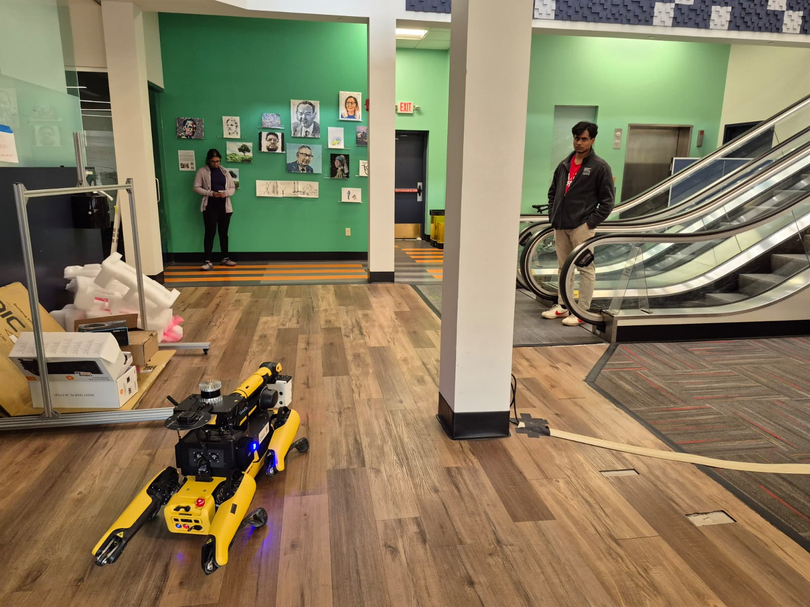
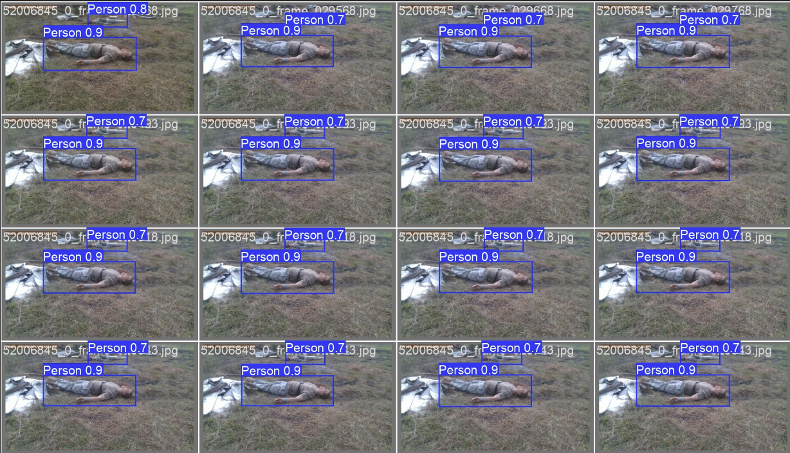
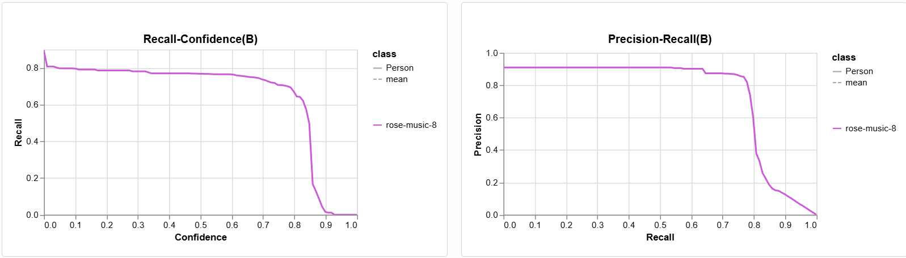
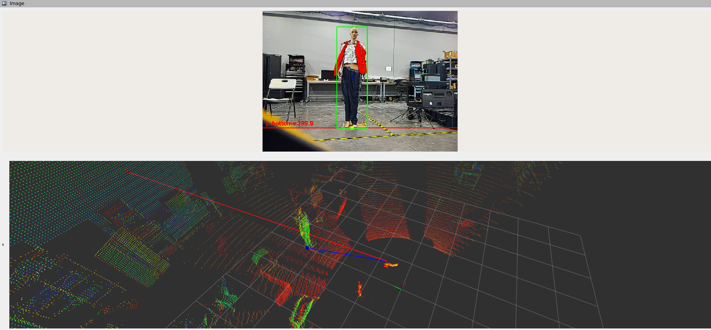

Overview
The DARPA Triage Challenge tasks autonomous ground robots with rapidly locating and triaging casualties across large, complex environments. As part of Team Chiron at AirLab, Carnegie Mellon University, I built the ROS 2 perception pipeline responsible for detecting casualties and reporting their 3D positions to the downstream autonomy stack in real time. The system ran on a Boston Dynamics Spot quadruped during field preparations from October 2025 through June 2026.
The core engineering challenge was producing reliable, low-latency 3D casualty positions from noisy sensor data across six simultaneous camera streams while the robot moved through unstructured terrain. The pipeline integrates object detection, LiDAR-based depth estimation, and a tracking layer that outputs stable positions in the robot's SLAM/odometry frame, ready for downstream planning and reporting.
Pipeline
The stack is composed of three ROS 2 nodes operating as a detection–localization–tracking chain, deployed on-robot inside a Dockerized container:
- Detection — A fine-tuned RF-DETR model runs inference across all six onboard RGB camera streams simultaneously. Each frame produces 2D bounding boxes with confidence scores for detected casualties, which are passed to the localization service.
- LiDAR Projection & Clustering — For each 2D bounding box, the LiDAR point cloud is projected into the camera frame and the points falling inside the box are extracted. These points are clustered and scored against several criteria — point density, spatial extent, depth consistency, and bounding box alignment — to isolate the best candidate cluster for the detected person.
- 3D Ground Contact Estimation — The selected cluster is used to compute a 3D ground contact point, giving the casualty's position relative to the robot body. A geometry-based fallback using camera TF transforms and bounding box pitch offset handles cases where LiDAR returns inside the box are too sparse.
-
Tracking — A tracker node consumes the stream of 3D position
measurements, associates each one with an existing track via distance-based
nearest-neighbour matching, and averages positions over a sliding window for
robustness. Tracks are continuously transformed into the SLAM/odometry frame
so that published positions remain valid as the robot moves.
The tracker publishes a
TrackedHumanArrayat approximately 10 Hz for downstream planning. - Deployment & Visualization — The full pipeline runs on-robot in a Dockerized container with a tmux-managed launch workflow. Annotated camera streams and live 3D casualty markers are visualized in Foxglove, enabling real-time monitoring and debugging during field runs.
Demo Videos
LiDAR point cloud projected into the camera frame, with 2D detection box overlay
Single-target casualty detection and localization
Multi-target casualty tracking — 3D markers in SLAM/odometry frame
Pipeline overview
Field test — Spot walking with live detection active
Project Images

Spot at a DARPA Triage Challenge field test

RF-DETR casualty detections across RGB camera streams

Tracker performance and localization diagnostics

3D casualty localization visualization in Foxglove
My Contribution
- Designed and implemented the end-to-end ROS 2 casualty detection and 3D localization pipeline
- Integrated a fine-tuned RF-DETR detection model across six simultaneous RGB camera streams
- Built the LiDAR point cloud projection, clustering, and scoring module for per-bounding-box 3D localization
- Implemented the geometry-based fallback localizer using camera TF transforms and bounding box pitch offset
- Developed the casualty tracker: nearest-neighbour data association, sliding-window position averaging, and SLAM-frame transform integration
- Managed Dockerized on-robot deployment and live Foxglove visualization for field runs
- Validated the pipeline in live field tests on Team Chiron's Spot platform
Tech Stack
- ROS 2 Humble · Python
- Boston Dynamics Spot
- RF-DETR (fine-tuned casualty detection)
- LiDAR point cloud processing
- TF2 · SuperOdometry SLAM
- Docker · Foxglove
Status
Ongoing field-validated research engineering work. The pipeline ran on Team Chiron's Spot platform during DARPA Triage Challenge preparations at AirLab, Carnegie Mellon University (Oct 2025 – Jun 2026).